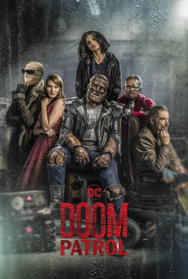

")
 
 IMDB-Wertung: 8.1 / 10
IMDB-Wertung: 8.1 / 10  Tomatometer: 95
Tomatometer: 95  Metascore:
Metascore: 
Jedes Mitglied der Doom Patrol hat einen schrecklichen Unfall erlebt, der ihnen ihre Superkräfte verliehen hat, aber sie entstellt oder für immer immer verändert hat. Durch den Anführer The Chief haben sie einen neuen Lebenssinn gefunden. Fortan beschützen sie die Erde vor dem, was sie bei ihren Abenteuern entdecken. Sie sind Teil Selbsthilfegruppe und Teil Superheldenteam, aber auch die Freaks unter den Superhelden, mit denen die Außenwelt nichts zu tun haben möchte.
Jahr: 2019
Dauer: 58 Minuten
FSK:
Land: USA Studio: DC UniverseTonspuren: - , - , - , - , - ,
Untertitel: Deutsch, Englisch,
Auflösung: 720p (1280x720) Größe: 2048 MB
Genre: Action, Drama, Sci-Fi, Komödie, Abenteuer, Mystery, TV-Serie
Regisseur: Dermott Downs, Carol Banker, Rob Hardy, Harry Jierjian, Chris Manley
Drehbuch: Jeremy Carver, Arnold Drake, Tom Farrell, Bob Haney, Bruno Premiani
Soundtrack:
Darsteller:
 April Bowlby als Elasti-Girl, 15 episodes, 2019
April Bowlby als Elasti-Girl, 15 episodes, 2019 Alan Tudyk als Eric Morden, 15 episodes, 2019
Alan Tudyk als Eric Morden, 15 episodes, 2019 Matt Bomer als Larry Trainor, 15 episodes, 2019
Matt Bomer als Larry Trainor, 15 episodes, 2019 Brendan Fraser als Cliff Steele, 15 episodes, 2019
Brendan Fraser als Cliff Steele, 15 episodes, 2019 Timothy Dalton als Chief, 15 episodes, 2019
Timothy Dalton als Chief, 15 episodes, 2019 Phil Morris als Silas Stone, 8 episodes, 2019
Phil Morris als Silas Stone, 8 episodes, 2019 Kyle Clements als John Bowers, 5 episodes, 2019
Kyle Clements als John Bowers, 5 episodes, 2019 Alec Mapa als Animal-Vegetable-Mineral Man, 3 episodes, 2019
Alec Mapa als Animal-Vegetable-Mineral Man, 3 episodes, 2019 Charmin Lee als Elinore Stone, 3 episodes, 2019
Charmin Lee als Elinore Stone, 3 episodes, 2019 Curtis Armstrong als Ezekiel the Cockroach, 3 episodes, 2019
Curtis Armstrong als Ezekiel the Cockroach, 3 episodes, 2019 Julian Richings als Heinrich Von Fuchs, 2 episodes, 2019
Julian Richings als Heinrich Von Fuchs, 2 episodes, 2019 Mark Sheppard als Willoughby Kipling, 2 episodes, 2019
Mark Sheppard als Willoughby Kipling, 2 episodes, 2019 Alimi Ballard als Joshua Clay, 2 episodes, 2019
Alimi Ballard als Joshua Clay, 2 episodes, 2019 Michael Scialabba als Father Archon, 2 episodes, 2019
Michael Scialabba als Father Archon, 2 episodes, 2019 Max Martini als Alistair, 1 episode, 2019
Max Martini als Alistair, 1 episode, 2019 Gary Basaraba als Big D, 1 episode, 2019
Gary Basaraba als Big D, 1 episode, 2019Datei: X:\Comic-Serien\Doom Patrol S01\Doom Patrol S01E01.mkv seit 09.10.2019
Festplatte: Comicverfilmungen+MusikCD
 Es gibt insgesamt 34 Filme in der Gruppe 'Comic-Serien'
Es gibt insgesamt 34 Filme in der Gruppe 'Comic-Serien'